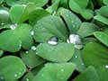
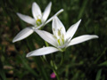
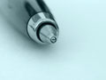
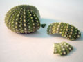

 Jedna od velikih prednosti digitalnih fotoaparata je to što većina njih može snimati vrlo dobre snimke u makro modu. U principu, makro snimkama se smatraju slike koje prikazuju malene objekte u uvećanom mjerilu ili 1:1. Zbog konstrukcijskih razloga samo su rijetki klasični fotoaparati imali mogućnost snimanja makro fotografija bez posebne opreme.
Makro fotografija je pojavom i kvalitetom snimki digitalnih fotoaparata dobila novi zamah. Osim što je interesantna ljudima kojima je iz nekog razloga potrebno dokumentiranje sitnih predmeta (filatelisti, numizmatičari, draguljari...) takvom vrstom fotografije se bave i ostali profili fotografa. Približavanjem objektiva predmetu kojeg slikamo vidi se sve više detalja, tekstura i oblika koje inače ne zamijećujemo golim okom. Teme makro fotografija sve više postaju cvijeće, kukci i razni sitni predmeti.
Tehnički gledano, sve makro fotografije imaju nekoliko zajedničkih stvari o kojima treba voditi računa. Zbog malog razmaka između subjekta i objektiva doći će do pojave vrlo male dubinske oštrine, pa pri kadriranju pripazite na udaljenost raznih predmeta od objektiva. Zbog male dubinske oštrine će vrijeme okidanja će biti produženo, pa smo i s te strane ograničeni. Zbog toga svakako treba paziti na trešnju aparata - dobro bi bilo nekako ga učvrstiti ili koristiti stativ za fotoaparat. Druga bitna poveznica makro fotografija je osvjetljenje scene. Zbog malog prostora i specifičnih tehničkih uvjeta potrebno je koristiti neke trikove kako bi dobili ujednačenu osvjetljenost kadra.
 Zbog male dubinske oštrine dobro je bitne dijelove scene postaviti na način da se svi nalaze u ravnini paralelnoj sa ravninom senzora aparata. Ako snimate plošne predmete koji zauzimaju znatni dio kadra, postavite aparat tako da bude paralelan sa plohom predmeta. Naravno, vrijedi i suprotno: iskoristite malu dubinsku oštrinu tako da objekte postavite na različitim udaljenostima od objektiva i time pojačajte efekt vizualne izdvojenosti subjekta.
Pri malim fokusnim duljinama posebno dolaze do izražaja razna izobličenja slike. Zbog toga izbjegavajte vizualno utjecajne vertikale ili horizontale na rubovima kadra - takve stvari podsvjesno gledatelju upadaju u oko i čine sliku neprirodnom.
 Što se tiče osvjetljenja scene, pri makro načinu snimanja ćete sigurno imati barem malo problema sa neželjenim sjenama na subjektu. Da biste ih eliminirali i omekšali svjetlo, postavite na stranu suprotnu od izvora svjetlosti reflektor. Kao reflektor možete koristiti komad kartona, papira, plastike i slične svijetle plosnate predmete. Naravno, pri tome pazite na njihovu boju da ne bi uzrokovali pomak u spektru boja. Ako vam kartonski reflektori ne odbijaju dovoljno svjetla (ili ih ne možete postaviti dovoljno blizu objekta) možete koristiti ogledalo, ili na karton nalijepiti aluminijsku foliju. Ako je ambijentalno svjetlo preslabo i koristite umjetno svjetlo pazite na balans boja. U velikoj većini slučajeva od bljeskalice na aparatu nećete imati koristi. Iako neke smanjuju intenzitet bljeska kad snimate u makro modu, obično  preeksponiraju sliku. Ako ste ipak ograničeni na makro fotografiju osvjetljenu bljeskalicom, tada pokušajte improvizirati tako da paus-papir nalijepite preko bljeskalice da rasprši svjetlosni snop i pokušajte sa raznim kombinacijama reflektora sa bočnih strana.
U svakom slučaju, makro fotografija je vrlo zabavna i ako vaš aparat ima mogućnost snimati u makro modu, svakako se pozabavite time. Počnite sa statičkim predmetima i što više eksperimantirajte - to je najbolji način učenja.
{kind=link}
{kind=link}
{kind=link}
{kind=link}